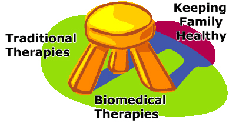

Phone: +91 99587 21300
Email : info@autismcenter.in
- facebook

- twitter

- googleplus


Child Newly Diagnosed With Autism
This brief introduction is an important overview for the parent when a child is diagnosed with autism. It provides suggestions for next steps for your child.
You have entered a new world with your family – AUTISM.
Having A Child With Special Needs Require Focus And Diligence.
It is important to focus on the three core components of managing your life after the diagnosis. Think of these three areas like a stool – without one leg the stool will fall over.

Traditional Therapies- • Traditional therapies are the intensive early interventions provided to help the child:
- Minimize inappropriate behaviors
- Enable learning
- Set and achieve goals and objectives
- These therapies include:
- One-on-one therapies such as applied behavioral analysis (ABA), Floortime, and others
- Speech therapy
- Occupational (OT) or physical (PT) therapies
- Social skills
Biomedical Therapies
- Treating children with autism with only one therapy either biomedical – or – traditional therapies is not enough. You need to focus on both.
- Biomedical therapies include:
- Testing for genetic disorders and baseline testing
- Testing and treating for other problems besides autism such as gastrointestinal, immune, allergy, metabolic and thyroid dysfunction.
- Biomedical therapies may be harder to grasp but diligent effort, research and persistence will pay off.
- Most individuals with autism also have medical conditions. These conditions need attention and treatment.
- It is important to never let the excuse that “your child has autism” be the reason for NOT TREATING a medical issue that requires treatment.
- Remember: Autism is treatable via biomedical interventions.
Keeping Family Healthy
- One of the most devastating events to happen to a family is the diagnosis of a special needs child.
- Many families focus on the needs of the child while neglecting other children, spouse and family members.
- Even though time is precious – paying attention to these other relationships is key.
- Managing health of care takers is also important. Do not neglect your own health needs while caring for a special needs child.
Where To Start?
Welcome to LEARNING CENTER FOR AUTISM for guidance and support.

Developing, providing creative & innovative educational services for individual and their families affected by Autism.